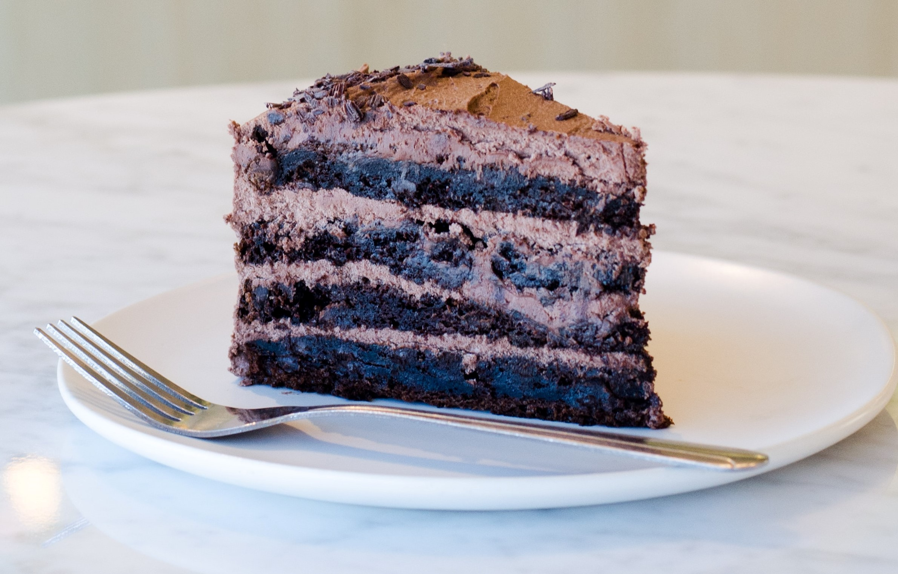

Drinks

Jamun Shots
Recipe
Jamun Shots
×
Ingredients:
250gm jamun fruits, 1 glass of water, 1 tsp sugar, 2 tsp salt, 1 tsp lemon juice.
Method:
1. Take jamun fruits in a bowl (washed)
2. Deseed jamun fruits using a knife
3. Put deseeded jamun fruits in an airtight container and freeze for 7-8 hours in a refrigerator.
4. Take frozen jamuns in a bowl
5. Prepare sugar & lemon juice - Take a glass of water and add sugar powder (as per taste) and 1 tsp lemon juice
6. Take frozen jamuns in a mixer bowl
7. Add sugar & lemon juice in a bowl
8. Blend for half a minute
9. Add more sugar & lemon juice if the pulp is still thick
10. Blend again for few seconds
11. Jamun shots are ready to serve..!